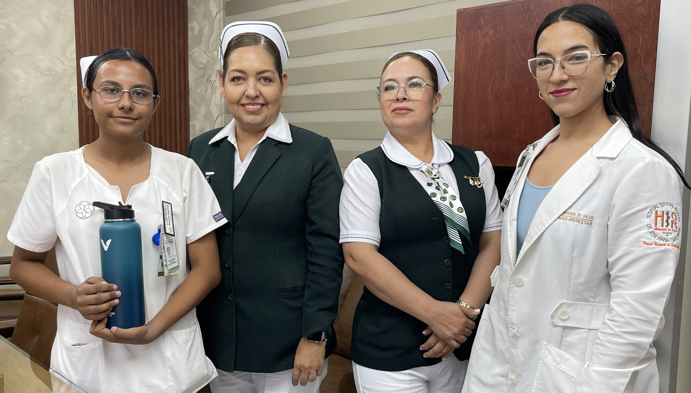
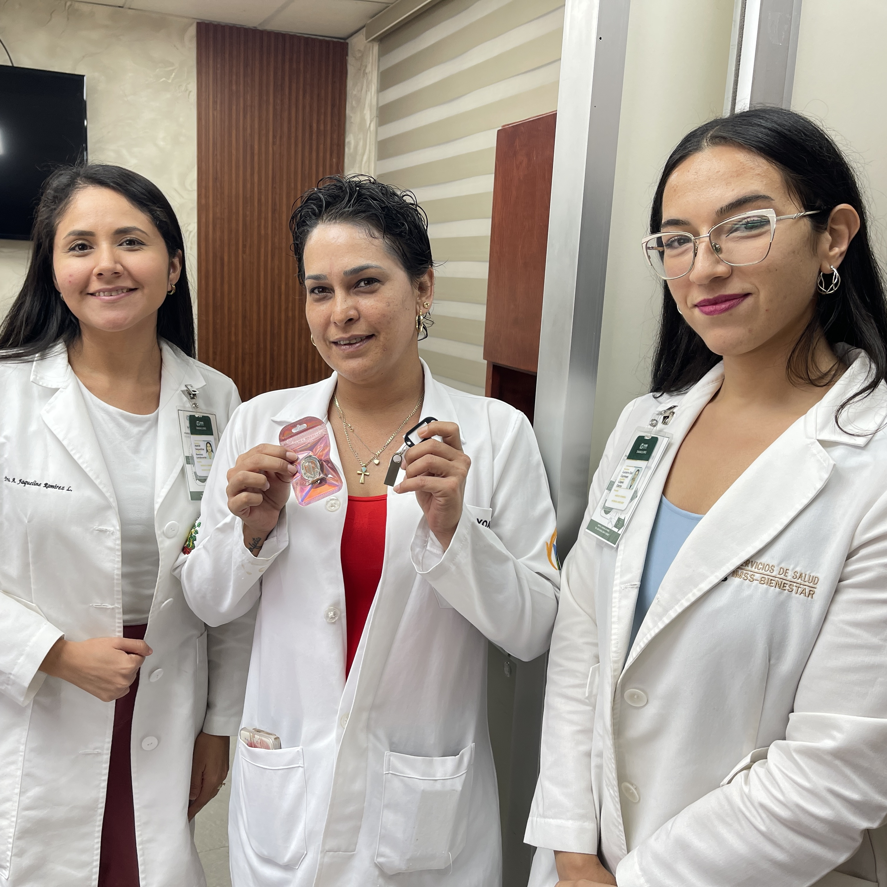
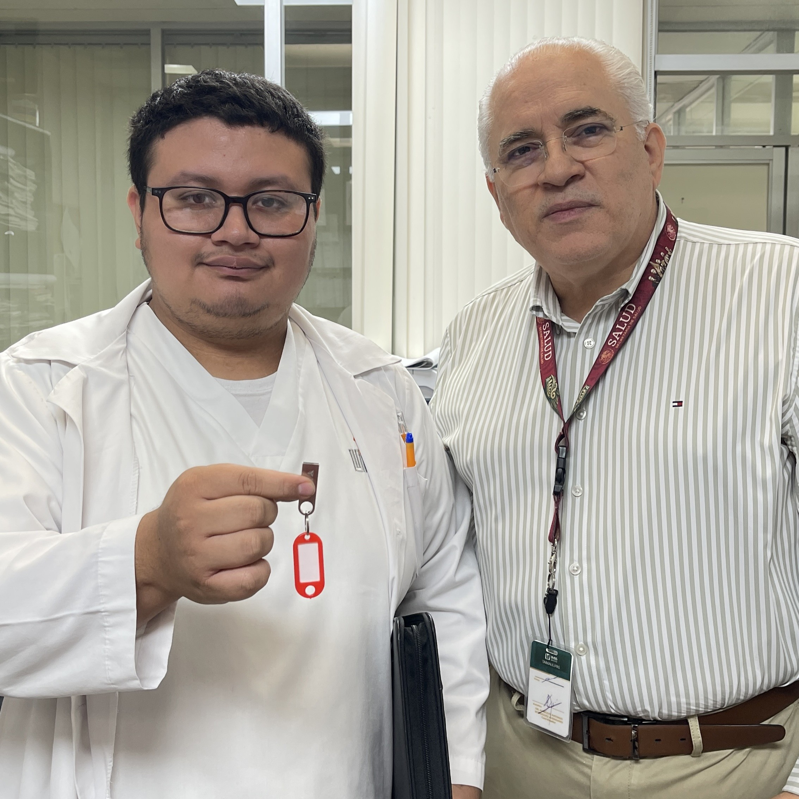
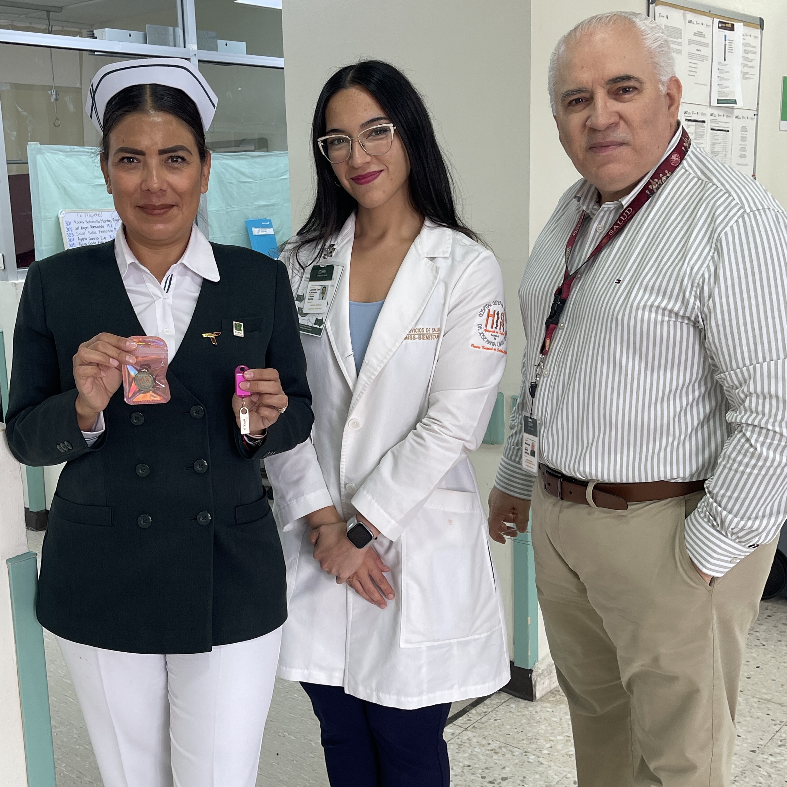
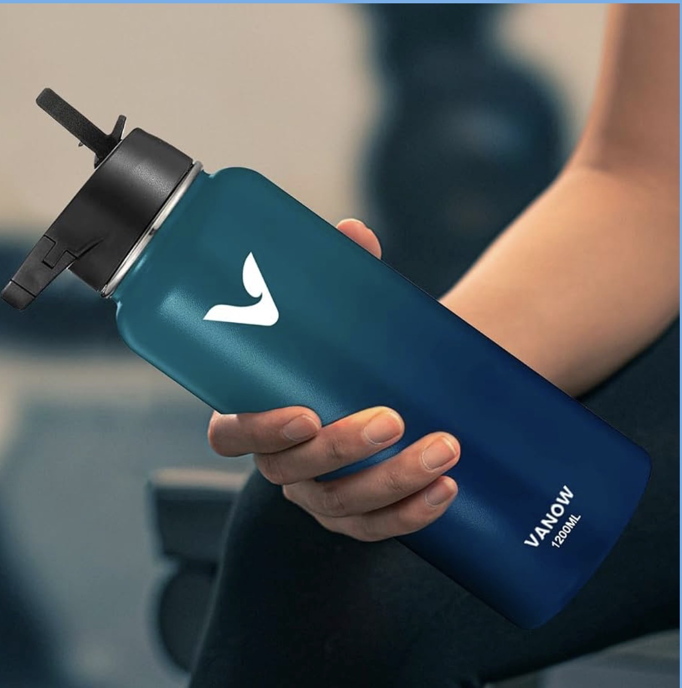
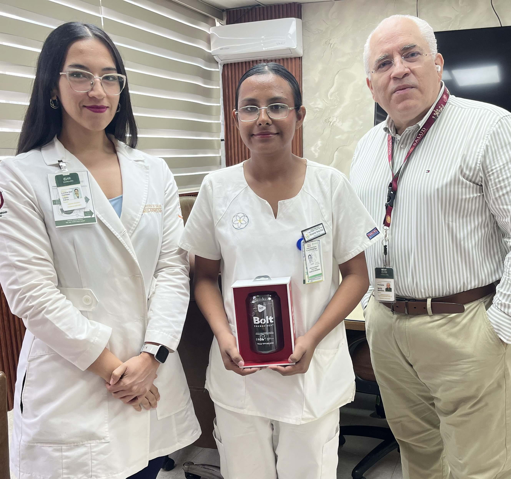
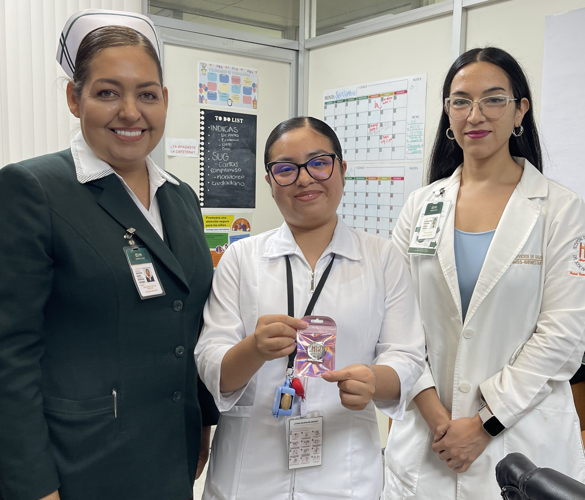
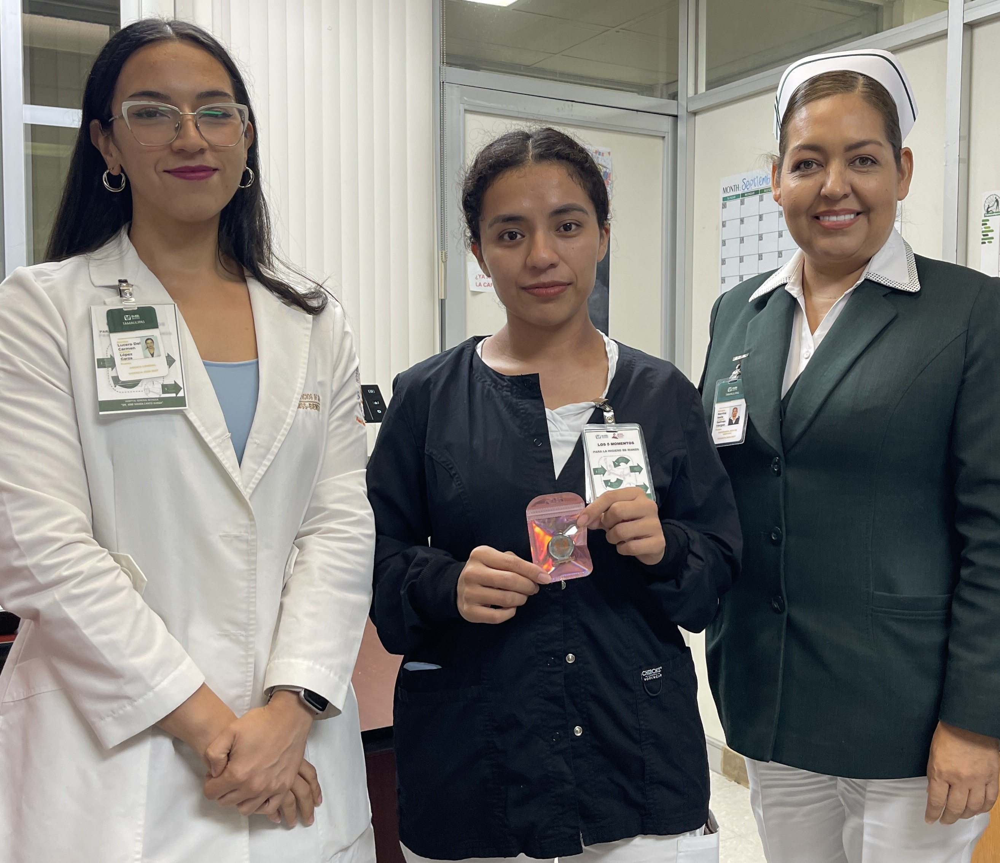
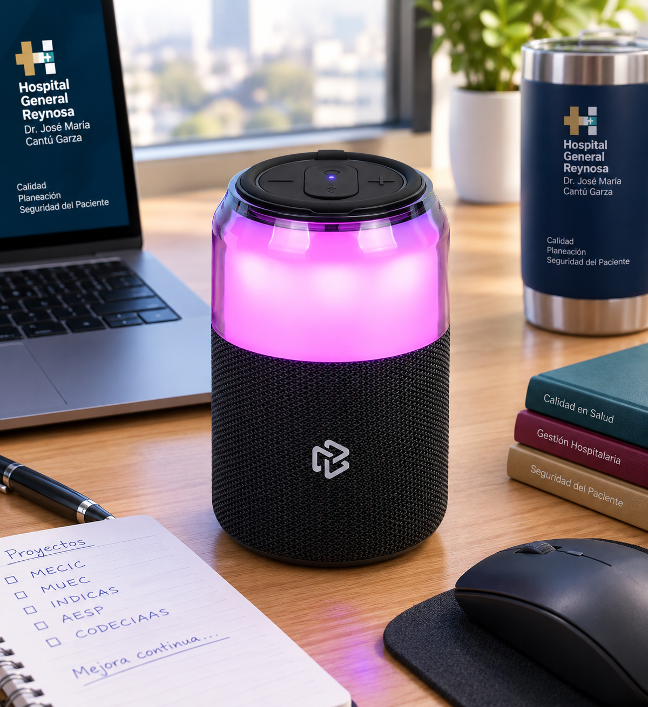

Montserrat Ferral Avila
Premio: termo EASYTAO de acero inoxidable, doble pared, 40 oz (1.18 L), color verde-azul, con tapa hermética antigoteo y asa para transportar, por la mejor justificación clínica del día. Entregado por Jefa de Enseñanza en Enfermería y el equipo de Gestión de Calidad.

Yoana Iglesias Sánchez
Reconocimiento: pin con emblema del Hospital General Reynosa y memoria USB de 16 GB, por su destacada justificación clínica.

Ricardo Ramirez Vazquez
Reconocimiento: Memoria USB de 16 GB, por su destacada justificación clínica.

Cinthya Gabriela De La Fuente Cabrera
Reconocimiento: pin con emblema del Hospital General Reynosa y memoria USB de 16 GB, por su destacada justificación clínica.

Dennis Berenice Rubio Hernández
Reconocimiento: Memoria USB de 16 GB, por su destacada justificación clínica.


Montserrat Ferral Avila
Premio: bocina inalámbrica STF Bolt transparente, con luces RGB, conexión USB, batería recargable y certificación IPX3 (resistente a salpicaduras), por la mejor justificación clínica del día. Entregado por el equipo de Gestión de Calidad.

Britney Josselin Ignacio Ferrer
Reconocimiento: pin con emblema del Hospital General Reynosa por su destacada justificación clínica.

Elia Floricel Aguilar Hernández
Reconocimiento: pin con emblema del Hospital General Reynosa por su destacada justificación clínica.


Jeidy Karime Ramírez Fonseca
Premio: bocina bluetooth portátil JBL Go Essential 2, edición especial Selección Nacional de México, por la mejor justificación clínica del día. Entregado por el equipo de Gestión de Calidad.
Dennis Berenice Rubio Hernández
Reconocimiento: pin con emblema del Hospital General Reynosa por su destacada justificación clínica.

Karina Santes Hernández
Reconocimiento: pin con emblema del Hospital General Reynosa + detalle de cortesía, por su destacada justificación clínica.